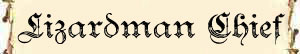

|
|
Ambiente/Habitat | Paludi |
| Frequenza | Uncommon | |
| Organizzazione | Gruppo | |
| Periodo di Attività | Qualsiasi | |
| Dieta | Carnivoro | |
| Intelligenza | Low Intelligence (7) | |
| Punti Combattimento | 6 Punti Combattimento | |
| Tesoro | Comune | |
| Allineamento Dominante | Neutrale | |
| Numero di Apparizione | 1d12: (1-5) 2d3+1 (6-10) 2d4+2 (11-12) 2d6+3 | |
| Classe Armatura | 4 [10 base, -5 corazza, -1 destrezza] / 3 con lo scudo | |
| Movimento | 6 esagoni / Nuotare 6 esagoni | |
| Dadi Vita | 3 (+3 punti ferita) | |
| Thac0 | 17 | |
| Numero di Attacchi | Arma, 1 attacco al round e Morso | |
| Danni | Danno dell'arma con +1 dovuto alla forza - 1d6 (Taglio) | |
| Poteri Offensivi | Istinto Predatorio; | |
| Poteri Difensivi | Robustezza Superiore [3]; | |
| Poteri Generici | Camminata Acquatica; Trattenere il Fiato; |
|
| Vulnerabilità | Nessuna; | |
| Resistenza alla Magia | Nessuna; | |
| Sensi | Vista Comune; Sensi Superiori; | |
| Dimensioni | Medium (1,90 m. altezza) | |
| Morale | Elite (13) | |
| Valore in Punti Esperienza | 234 |
|
TIRI SALVEZZA DELLA CREATURA |
|||||||
| CORAGGIO | ENERGIA VITALE | MAGIA | MALATTIA | MENTE | RIFLESSI | ROBUSTEZZA | VELENO |
| 0 | 0 | 0 | 0 | 0 | +5% | 0 | 0 |
| 49 | 55 | 62 | 47 | 60 | 49 | 53 | 49 |
Descrizione
Questo alto umanoide sembra un incrocio tra un umano di corporatura massiccia e una lucertola. Ha mani artigliate, una lunga coda e mandibole piene di denti. I lizardmen generalmente sono alti quasi 2 metri con scaglie verdi, grigie o marroni. Le loro code sono utilizzate per mantenere l'equilibrio e sono lunghe circa un metro. Un lizardman può pesare tra i 100 e i 125 chilogrammi.
Combat
I lizardmen combattono individualmente, senza un'organizzazione. Preferiscono assalti frontali e cariche di massa, cercando a volte di spingere i loro avversari nell'acqua, dove guadagnano un vantaggio. Se sono in minoranza numerica o se il loro territorio è stato invaso, preferiscono posizionare trabocchetti, pianificare imboscate, e compiere incursioni per ostacolare i rifornimenti del nemico. Le armi favorite dei lizardmen sono i giavellotti della tipologia stonehead (iniziativa +4, danni 1d4,+1 forza, gittata 15/30/45 metri), di cui sono soliti trasportarne almeno tre, che sono soliti scagliare sui nemici in fuga o, di sorpresa, prima di andare entrare in corpo a corpo e la mace (iniziativa +5, danni 1d6,+1 forza) con la quale combattono in melee utilizzando uno scudo di legno o di guscio di tartaruga. Quando costretti a combattere sotto la superficie dell'acqua utilizzano il giavellotto come arma da corpo a corpo.
ISTINTO PREDATORIO (Moderate Special Ability): La creatura possiede un forte istinto predatorio, per tale motivo costei riceve un bonus costante di +1 ai suoi tiri per colpire.
ROBUSTEZZA SUPERIORE (Typical Ability): Il fisico della creatura è estremamente robusto. Ciò conferisce alla stessa una robustezza superiore che gli garantisce 3 punti ferita supplementari.
CAMMINATA ACQUATICA (Lesser Special Ability): Questa creatura è in grado di spostarsi camminando con il corpo parzialmente immerso nell'acqua riducendo di una classe la penalità al movimento che le sarebbe normalmente applicata. Si noti che quest'abilità non riduce l'eventuale penalità al combattimento prevista per il corpo parzialmente immerso nell'acqua.
TRATTENERE IL FIATO (Least Special Ability): Grazie alla propria conformazione fisica questa creatura riesce a mantenere il fiato per 12 round prima di rischiare l'annegamento.
Habitat/Society
I lizardmen vivono in villaggi tribali creati con capanne di fango, terra, radici e pelli. Costoro producono ed utilizzano armi di legno o metallo e scudi di legno o di gusci di tartarughe; i capi di queste tribù possono anche possedere dell'equipaggiamento rubato o scambiato con altre creature intelligenti. I lizardmen hanno una società patriarcale nella quale il membro più forte governa sugli altri. Gli sciamani offrono consiglio ma raramente guidano la comunità. La loro preoccupazione principale è la sopravvivenza, una tribù minacciata o affamata arriverà a fare qualunque cosa (anche azioni considerate abominevoli da altri umanoidi) pur di garantire la continuità della propria esistenza. La maggior parte delle tribù vive nelle paludi, ma in alcuni casi si trovano insediamenti sotterranei nei pressi di falde acquifere. Tribù locali spesso si uniscono per fronteggiare pericoli maggiori e a volte creano alleanze con gli snakeman oppure servono creature più potenti, come naga o draghi. Nelle aree isolate sopravvivono pescando, raccogliendo ciò che trovano e cercando carogne, mentre quelli che vivono vicino ad altri umanoidi compiono razzie per rubare cibo, rifornimenti e schiavi. Le tribù di lizardmen adorano principalmente le Forze della Natura, in casi più rari (nel 30% dei casi) venerano Azatar, culto malvagio che finisce per incidere sulla politica tribale.
Ecology
Leggende popolari affermano che i lizardmen preferiscono la carne umanoide, ma queste accuse sono decisamente infondate (anche se alcun e tribù si cibano dei prigionieri o massacrano i nemici sconfitti).

|
|
Ambiente/Habitat | Paludi |
| Frequenza | Uncommon | |
| Organizzazione | Gruppo | |
| Periodo di Attività | Qualsiasi | |
| Dieta | Carnivoro | |
| Intelligenza | Low Intelligence (7) | |
| Punti Combattimento | 10 Punti Combattimento | |
| Tesoro | Comune come creatura large | |
| Allineamento Dominante | Neutrale | |
| Numero di Apparizione | 1d12: (1-7) 1 (8-11) 1d3 (12) 1d4+1 | |
| Classe Armatura | 3 [10 base, -6 corazza, -1 destrezza] | |
| Movimento | 6 esagoni / Nuotare 6 esagoni | |
| Dadi Vita | 4 (+8 punti ferita) | |
| Thac0 | 15 | |
| Numero di Attacchi | Arma, 1 attacco al round e Morso | |
| Danni | Danno dell'arma con +4 dovuto alla forza - 1d6+2 (Taglio) | |
| Poteri Offensivi | Impeto Superiore; Lacerazione Inferiore; Abilità Tattica; |
|
| Poteri Difensivi | Robustezza Superiore [8]; | |
| Poteri Generici | Camminata Acquatica; Trattenere il Fiato; |
|
| Vulnerabilità | Nessuna; | |
| Resistenza alla Magia | Nessuna; | |
| Sensi | Vista Comune; Sensi Superiori; | |
| Dimensioni | Medium (1,90 m. altezza) | |
| Morale | Champion (15) | |
| Valore in Punti Esperienza | 481 |
|
TIRI SALVEZZA DELLA CREATURA |
|||||||
| CORAGGIO | ENERGIA VITALE | MAGIA | MALATTIA | MENTE | RIFLESSI | ROBUSTEZZA | VELENO |
| 0 | 0 | 0 | 0 | 0 | +5% | +5% | 0 |
| 49 | 55 | 62 | 47 | 60 | 49 | 48 | 49 |
Descrizione
Questo alto umanoide sembra un incrocio tra un umano di corporatura massiccia e una lucertola. Ha mani artigliate, una lunga coda e mandibole piene di denti. I lizardmen chief sono alti circa 2 metri ed hanno scaglie molto scure di colore grigio o verde. Costoro possiedono una cresta pinnata molto più pronunciata rispetto ai comuni lizardmen. Le loro code sono utilizzate per mantenere l'equilibrio e sono lunghe circa un metro. Un lizardman chief può pesare circa 150 chilogrammi.
Combat
I lizardmen chief combattono individualmente, senza un'organizzazione. Preferiscono assalti frontali e cariche di massa, cercando a volte di spingere i loro avversari nell'acqua, dove guadagnano un vantaggio. A differenza dei comuni Lizardmen, i comandanti non utilizzano scudi. Le armi favorite dei lizardmen chief sono i giavellotti della tipologia stonehead (iniziativa +4, danni 1d4,+4 forza, gittata 15/30/45 metri), di cui sono soliti trasportarne almeno tre, che sono soliti scagliare sui nemici in fuga o, di sorpresa, prima di andare entrare in corpo a corpo e la great mace (iniziativa +8, danni 1d8+1,+4 forza) con la quale combattono in melee. Quando costretti a combattere sotto la superficie dell'acqua utilizzano il giavellotto come arma da corpo a corpo.
IMPETO SUPERIORE (Superior Special Ability): Questa creatura riesce a colpire i propri avversari con impeto superiore, per tale motivo riceve un bonus costante di +2 ai suoi tiri per colpire.
LACERAZIONE INFERIORE (Lesser Special Ability) [MORSO]: I denti di questo predatore sono lunghi ed appuntiti come coltelli. Qualora questa creatura attacca una vittima con il proprio morso colpendola con particolare precisione la stessa potrà lacerarne a fondo il corpo. Ciò avviene quando questa creatura colpisce una vittima con il suo morso effettuando un tiro per colpire naturale da 19 a 20. Quando ciò si verifica l'attacco provocherà il 1d6 danni supplementari. Tutti i danni saranno considerati danni da taglio e provenienti da un unico attacco (ad es. ai fini dei critici e dei danni alla corazza).
ABILITA' TATTICA (Least Special Ability): La creatura è particolarmente abile nel combattimento per questo motivo riceve permanentemente 3 punti combattimento supplementari.
ROBUSTEZZA SUPERIORE (Typical Ability): Il fisico della creatura è estremamente robusto. Ciò conferisce alla stessa una robustezza superiore che gli garantisce 8 punti ferita supplementari.
CAMMINATA ACQUATICA (Lesser Special Ability): Questa creatura è in grado di spostarsi camminando con il corpo parzialmente immerso nell'acqua riducendo di una classe la penalità al movimento che le sarebbe normalmente applicata. Si noti che quest'abilità non riduce l'eventuale penalità al combattimento prevista per il corpo parzialmente immerso nell'acqua.
TRATTENERE IL FIATO (Least Special Ability): Grazie alla propria conformazione fisica questa creatura riesce a mantenere il fiato per 12 round prima di rischiare l'annegamento.
Villaggio Lizardman
Il villaggio
rappresenta la forma base e più comune di aggregazione dei Lizardman. Sparsi
nelle paludi, infatti, esistono numerosi piccoli villaggi di Lizardman. Sono
piccole comunità autonome (specie nelle zone remote od isolate) oppure
subordinate ad una comunità maggiore di cui rappresentano villaggi satelliti,
luoghi di confine, insediamenti di caccia.
Tipicamente un villaggio Lizardman può contare su:
2d10+15 Lizardman
1 Lizardman Chief + 1 ogni 10 Lizardman o frazione
33% di 1 Lizardman di Classe ogni 10 Froglar o frazione
Selezione della classe
[1d12]
(1-5)
Combattente:
[1d12] (1-6)
Fighter, (7-9)
Berserker, (10-11)
Archer,
(12)
Adoratore del Sangue
(6-8)
Vagabondo:
[1d12] (1-9)
Thief;
(10-12)
Hunter
(9-10)
Sacerdote:
[1d12] (1-10)
Cleric;
(11-12)
Shaman
(11)
Combattente/Sacerdote:
Fighter/Cleric;
(12)
Combattente/Vagabondo:
[1d12] (1-10)
Fighter/Thief;
(11-12)
Fighter/Hunter;
Livello del personaggio [1d12] (1) 1° livello; (2-3) 2° livello; (4-6) 3° livello; (7-9) 4° livello; (10-11) 5° livello; (12) 6° livello.
Tesoro delle Comunità
Oltre al tesoro individuale, le comunità, possiedono solitamente un tesoro collettivo come indicato nelle seguenti tabelle:
Tesoro del Villaggio Lizardman
| Tipologia di Tesoro | 1 Dado Vita | Quantità |
| Gemme |
33% + 33% + 33% |
2d4+2 |
| Oggetti Preziosi |
25% + 25% |
1d3 |
| Oggetti Comuni |
66% |
1d6 |
| Armi | 33% + 33% | 1d6 |
| Armature | 33% + 33% | 1d2 |
| Oggetto Magico | 33% + 22% + 11% | 1 oggetto magico 1d10: (1-7) common (8-10) rare |
| Monete di platino | 30% + 20% | 1d10 * 15 monete di platino |
| Monete d'oro | 50% + 40% +30% | 2d6+3 * 100 monete d'oro |
| Monete d'argento | 75% + 50% | 2d12+6 * 100 monete di argento |
| Monete di rame | 80% + 40% | 2d20+10 * 125 monete di rame |